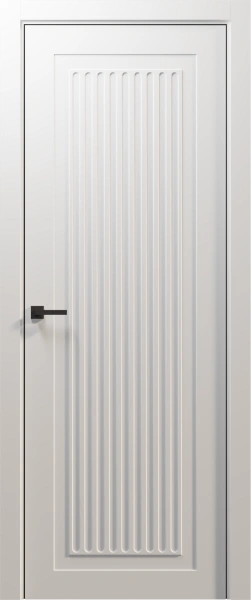

ШИРИНА
От 600 до 900 мм
Стандартные ширины полотна идут с шагом 50 мм.
- 600 / 650 / 700 / 750 мм
- 800 / 850 / 900 мм
Система Hidden Doors 36 мм объединяет полотно, телескопический короб, наличники и доборы. Подберите комплект и покрытие под интерьер до начала отделки.

Межкомнатная дверь — это не только полотно. Короб, наличники и доборы формируют законченный дверной проём, поэтому их лучше согласовать как единый комплект.
| Конструкция | Каркасно-щитовая |
|---|---|
| Толщина полотна | 36 мм |
| Стандартные ширины | 600–900 мм, шаг 50 мм |
| Стандартные высоты | 1800 / 1850 / 1900 / 2000 мм |
| Короб | Телескопический, 70 × 32 × 2070 мм |
| Наличник | Телескопический, ширина 70 мм |
| Доборы | 100 / 150 / 200 мм |
| Покрытия | ПВХ или грунт под покраску |
Стандартная размерная сетка помогает заранее согласовать проём, комплект и отделку.
Стандартные ширины полотна идут с шагом 50 мм.
Подбираем полотно под размер проёма и выбранный комплект.
Перед расчётом учитываем размеры проёма и толщину стены, чтобы правильно подобрать короб и доборы.
Полотно и элементы погонажа можно подобрать в согласованном покрытии.
Каркасно-щитовая дверь толщиной 36 мм с выбранным вариантом оформления и покрытия.
Телескопический короб и наличник позволяют собрать дверной блок в едином визуальном решении.
Стандартные доборы 100, 150 и 200 мм помогают оформить глубину дверного проёма.
Выберите готовый декор ПВХ или грунт под последующую окраску. Покрытие полотна и погонажа лучше определять одновременно.
ПВХ подходит для готового декоративного решения. Грунт используют, когда дверь и элементы комплекта планируется окрашивать в выбранный цвет интерьера.
Конкретный декор, цвет и стоимость подтверждаем при расчёте заказа.Система 36 мм подходит для жилых интерьеров, где важны согласованные полотно, короб и погонаж.
Можно использовать одну систему дверей в нескольких помещениях и сохранить общий визуальный язык интерьера.
Подбираем размеры полотен и погонаж под конкретные проёмы внутри проекта.
MODENA, SIENA, LUCCA, AXIS, VECTOR, RHYTHM, ARC и FLUTE.
Смотреть коллекции ↗Комплектация зависит от проекта. Для системы 36 мм можно подобрать полотно, телескопический короб, наличники и необходимые доборы.
Стандартные ширины — от 600 до 900 мм с шагом 50 мм. Стандартные высоты — 1800, 1850, 1900 и 2000 мм.
Для системы 36 мм предусмотрены ПВХ и грунт под последующую окраску.
Добор выбирают с учётом толщины стены. Стандартные ширины — 100, 150 и 200 мм; точный комплект определяем после размеров проёма.
Оставьте заявку и укажите город. Команда Hidden Doors уточнит задачу и поможет подобрать дилера.
Уточним размеры, покрытие и состав погонажа,
а затем поможем с оформлением заказа.